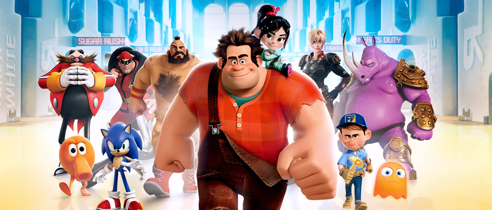

About Ralph
Ralph is awesome. He's an 8-bit videogame bad guy who travels the lenght of the arcade to prove that he's a good guy.
Ralph and his friends
Ralph's Characteristics:
- He's got big hands
- He's treated as bad-ass
- He's trying to be a good guy
Ralph's Friends
Ralph has some awesome friends. His best friend in Glitch; she's awesome. Click on the links below to read more about them: